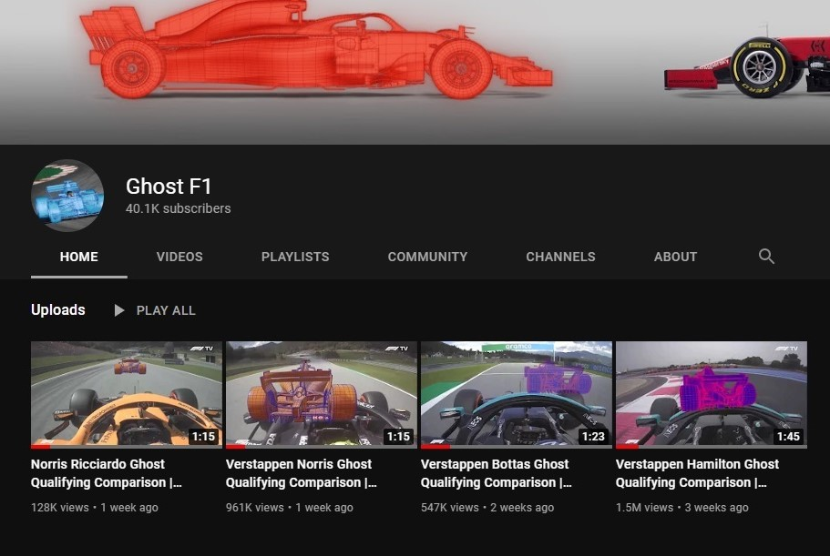

Ghost F1 is a YouTube channel I created to compare Formula 1 qualifying laps using ghosts in the same way as racing games, such as TrackMania. I have used Blender to animate the ghost car.
I created four videos over three weeks. These gained over 3 million views and grew my Ghost F1 YouTube channel to over 40,000 subscribers.
The videos were later removed from YouTube due to copyright. A screenshot is shown below, showing my channel a few days before the videos were taken down.
Articles about Ghost F1.